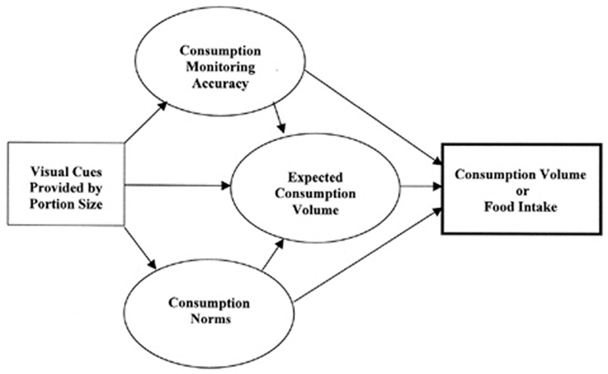
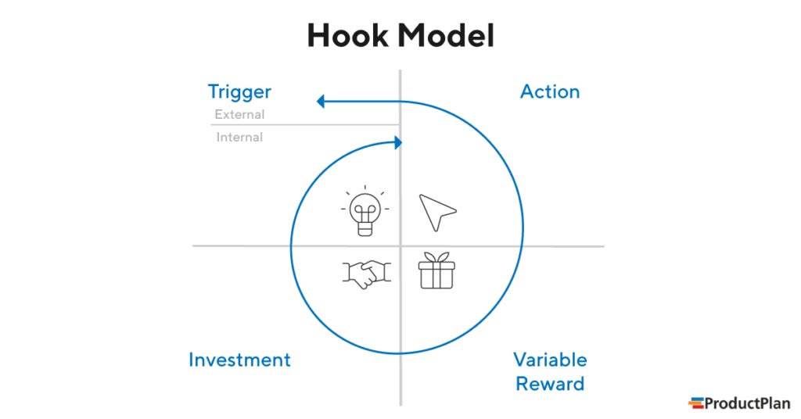
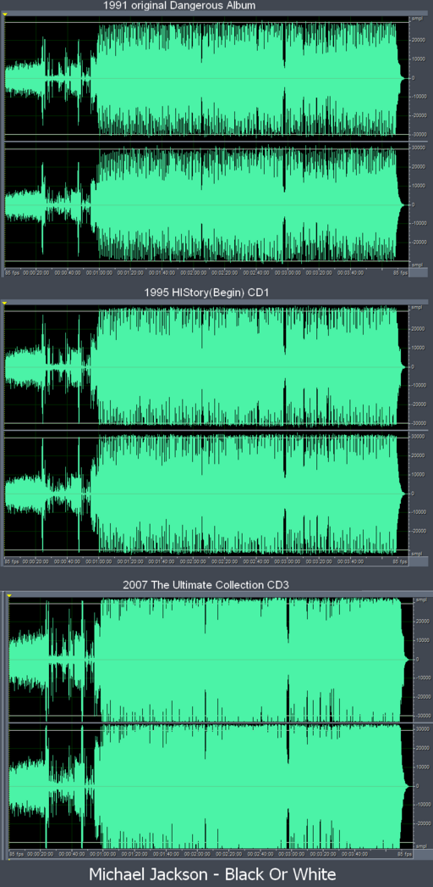

脑腐：信息的富裕，智识的荒原
前言
新年伊始，我发布了 2024 年的年终总结，结束了博客走过的第一个月份，也是第一个年份。在日益混杂繁忙的信息洋流之中，我想要通过博客这样一种早已淡出历史视野的形式，在混沌的海洋中再寻逻辑与意义。当然，本博客的创始文章和关于页面已经清楚地讲述了我建立这个博客的心理动机，因此，没有必要再一次重复它。但是，要讲述好这篇文章的主题，就不得不把催生《每日明》的心理因素再拿出来讲一遍。
我们需要这样一种载体：它既拥有良好的传播度，与互联网相合，又便于创作，还能拥有足够的空间展现作者完整的思考过程；在内容的呈现过程中，又不会存在奇怪的元素喧宾夺主，观众完全可以主动把握接受信息的速度与思考的节奏。以博客为代表的载体，非常适合承担这一任务，至今也没有可以平替的产品。
我一直从心底里反感流行的短平快的媒体形式，毫不客气地讲，（尽管不得不承认的确偶有例外，）这种形式所决定的篇幅，就已经同时决定了它不可能承载深度的、严肃的内容，就已经注定它会滑入庸俗和肤浅的垃圾坑中。仅仅在眼前停留一两分钟甚至数十秒的视频，有谁能够指望它能承载多少有价值的内容，有谁能够指望它能运用多么深刻的美学形式？以代表之一短视频为例，为了尽可能在极短的时间里获得尽可能多的关注，它们无所不用其极，将呕哑嘲哳的音乐、骇人听闻的文案和光怪陆离的画面煮成一锅沸反盈天的汤，以永无止境的滚动和令人作呕的循环播放一遍遍强奸观众的感官。即使有创作者以教学、科普为主题，狭窄的时间窗口也注定着他们难以呈现出真正具有深度的、系统性的内容。
在混乱的短视频世界外，同为短平快媒体的微博客显得平静得多。至少文字是需要读者主动接受的，而不是由媒体的声音强行侵入听觉器官。但是X这类微博客平台仍然不够——字数限制使得表达的空间窗口还是太小了。它们只适合分享——并且被设计成只适合分享，携带着超链接和新闻在人们的眼睛和指尖来回飞奔。如果分享的内容不巧是感悟和思考，那么它大抵会被压缩成一段故作高深的文字，虽然看起来确实像那么回事，但也只能看起来像那么回事——缺乏深度和系统性仍旧是这类媒介产物的痼疾。
至此，我们落入了一个充满矛盾的怪圈：信息的数量前所未有地增长，各个地域、各个领域的资讯从未有今天这般触手可及；但在信息的富足背后，是逐渐沉沦的人们，是不断扁平化的思维与日益撕裂的社会关系。飞速膨胀的信息量没有把人们送上智慧的高峰，反而使得众人止步于简单与浅薄，与严肃和耐心分道扬镳。在那篇年终总结中，我这样写道：
在人类历史上数次信息革命中，这是唯一一次，信息的传播和富足带来愚昧和撕裂。在过去，思想家们认为，导致愚昧的是精英阶层对传播介质的垄断，但今天，垄断消失后，我们发现事情变了，导致愚昧的是愚昧者自己的素养。
这不禁让人思考：这种矛盾为什么会诞生？我们有没有办法跳出这个愚昧与撕裂构成的漩涡？
在回答这两个问题之前，我们应当首先看一看事情的表层是什么样的。作为承载文化信息的语言，它是反映社会状况的绝佳利器，而流行词语，更是能够让我们一窥混乱的社会表象乱流中潜藏秩序的目镜。
流行语的背后
说到语言，负责牛津词典的牛津大学出版社可以称得上是首屈一指的权威。2024年底，牛津大学出版社宣布了年度词汇——“brain rot”（脑腐）。作为英文互联网上的流行词，它生动扼要地概括了过度使用互联网的因与果。无论是中文还是英文互联网，我们都能看到大量的低质量无意义的消遣内容，它们如同毒品一般令人难以自拔。长期沉浸于消遣内容之中，人们的思考能力如同缺乏锻炼的肌肉一般退化。
下面，我将展示牛津大学出版社相关文章的译文，由我自己译制，水平有限，不足之处还请读者指点。
“Brain rot”斩获 2024 牛津年度词汇[1]
（原文链接：https://corp.oup.com/news/brain-rot-named-oxford-word-of-the-year-2024/）
译者按：由于本文以“brain rot”为核心阐释对象，并将其作为一个专有名称对待，且主要以英语社群为叙述背景，综合考虑之下我决定保留“brain rot”原词不译。本文提到的 skibidi 是英文互联网的一个迷因，源自 YouTube 上一个从风格到内容都极其怪异的系列动画短片，而 skibidi 本身是不具有特定含义的，或者说，在日常生活中，它更接近于一个助词或语气词，类似 f-word。[2]
在超过 37000 人参与的公共投票后，我们高兴地宣布 2024 年牛津年度词汇是“brain rot”。
我们的语言专家选中了六个词语，它们反映了过去一年塑造社会氛围和讨论热点的词汇趋势。在两周的公共投票和广泛讨论后，我们的专家共同审视公众的选择、投票结果和我们的语言数据，最后宣布“brain rot”毫无疑问地成为2024年度之词。
为什么是“brain rot”？
“Brain rot”被定义为“设想的一个人精神和智力状态的退化，特别是被视为过度消费被认为无意义（trivial）或缺乏深度（unchallenging）的材料（现特指网络内容）的结果。亦指：被描述为可能导致此类退化的事物。”
我们的专家注意到，作为一个术语，“brain rot”捕捉对消费过量低质网络内容带来的影响的忧虑，在今年取得了令人瞩目的关注度，尤其是在社交媒体上。该术语的使用频率在 2023 和 2024 年间增加了 230%。
第一个使用“brain rot”一语的记录来自 1854 年亨利·大卫·梭罗的《瓦尔登湖》一书，该书记述了他在自然世界简朴生活的经历。作为他总结的一部分，梭罗批判社会趋向贬低复杂想法，或那些可以多种方式阐释的思想，而青睐简单的，他认为这是精神和智力能力普遍下降的显示：“英国正在下大力防治土豆腐烂，难道就不能下大力医治大脑腐烂吗？大脑腐烂现象，实在更普遍，因而也更致命啊。”[3]:247
这个词语在数字时代拥有了新的含义，特别是在过去 12 个月里。最初在社交媒体平台获得关注——特别是 TikTok 的 Z 世代和阿尔法世代社群里——“brain rot”现在被更广泛地使用，例如主流新闻媒体，社会对过度消费网络内容产生的负面影响的担忧中。
在 2024 年，“brain rot”被同时用于描述这一现象的因与果，指代社交媒体和互联网上低质、肤浅（low-value）的内容，以及消费此类内容被人们意识到的会对个人或社会产生的负面影响。
它也被更具体更一致地用于指称网络文化。它与特定的内容种类强烈相关，经常被网络社区幽默地或自嘲地使用——包括创作者 Alexey Gerasimov 爆红的 Skibidi Toilet 系列视频，该系列以人形马桶和用户生成的“仅在俄亥俄”（only in Ohio）迷因为特点，其中提及了该州的离奇事件。该内容使“brain rot语言”大量涌现——类似“skibidi”，表示某种荒谬和“俄亥俄”（意思是某种尴尬或怪异的东西）的事物——这反映出一个不断增长的态势，即词语先从流行网络文化发源，然后向线下“现实世界”传播。
现在，关于过度消费这类内容可能对心理健康，特别是儿童和年轻人产生的潜在负面影响的讨论愈加广泛和深入，也愈受重视。今年早些时候，美国一家心理健康中心甚至在网上发布了如何认识和避免“brain rot”的建议。
谈及概念评选进程和2024年的冬季，Oxford Language 主席 Casper Grathwohl 说道：
“看着全世界的语言爱好者们参与进来帮助我们评选 2024 牛津年度词汇，是一件充满感悟和深深感动的事情。
“回望历经 20 年岁月的牛津年度词语，人们可以看见社会越来越关注我们的虚拟生活如何演变，互联网文化如何深深渗入我们自己与我们所谈及之事。去年的获胜词汇‘rizz’，即是语言如何在网络社区中逐渐形成、塑造和分享的有趣事例。‘Brain rot’展示了虚拟生活已知的危险之一，以及我们利用闲暇时间的方式。这似乎正是有关人性与科技的文化对话中的下一个章节。如此多的投票者拥抱这个词汇，支持它成为我们今年的选择，这并不令人惊讶。
“我发现奇妙的是，‘brain rot’这一词汇被Z世代和阿尔法世代接纳，而那些社区正是使用和创造这一词语指代的数字内容的罪魁祸首，导致‘brain rot’的首祸诸臣。这表现出年轻一代对他们继承下来的社交媒体带来的有害影响有一些视若无睹的（cheeky）自我认识。”
发现更多有关我们的 2024 年度词语入围名单的资讯，发现过去 20 年里的获胜词语，庆祝牛津年度词语 20 周岁。
（完）
梭罗所指的“大脑腐烂”，原意是什么？我们不妨看看梭罗的原文是如何表述的。
瓦尔登湖 § 结束语（节选）[3]:247-248
英国和美国提出了一个荒唐可笑的要求，那就是：你说话非得让他们听得懂。无论是人们也好，还是伞菌也好，都不会变得如此这般。好像那种要求还很重要，没有他们也就没有人理解你了。仿佛大自然支持的是仅仅这么一种理解模式： 它养得起四足动物，却养不起鸟儿，养得起爬行动物，却养不起飞禽，连耕畜都听得懂的“嘘、吁”的吆喝，倒是成了顶呱呱的英语。仿佛唯有傻里傻气，反而万无一失似的。我的主要担心是，也许我的表达还不够过火，也许没有突破我的日常经验的狭隘局限，因而没法将我深信的真理表达得一清二楚。至于过火嘛！这倒是要看你处在什么样的场合。迁徙中的水牛到另一个纬度去寻找新的草场，就不会像喂奶时的奶牛一脚踹翻奶桶、跃过牛栏、紧迫它的小牛犊那样来得更过火吧。我想到某些没有忌讳的地方去说说话；就像一个清醒的人跟别的一些清醒的人那样说话。因为我相信，就算为真实的表达奠定基础，我离夸大其词还差得远呢。有谁听过一段音乐后就担心自己说话永远会夸大其词吗？为了未来或者可能发生的事，我们的生活应该过得相当随意，不受约束，而我们的原则也不妨显得模糊不清，就像我们的阴影对着太阳也会不知不觉地在渗汗似的。我们言辞里真实性变化无常，不断地暴露余下来的论述不够充足。它们的真实性会转瞬易变，只有其字面的标记得以留存。表达我们的信仰和虔诚的话语是很不确切的；然而，对出类拔萃的人来说，它们犹如乳香，意味深远，芳香四溢。
为什么我们总是使我们的认识降低到最愚笨程度，还要赞美它为常识呢？最常见的感受是人们睡觉时的感觉，他们是用鼾声表达出来。有时，我们往往将难得聪明的人和傻里傻气的人归为一类，因为我们只能欣赏他们的聪明的三分之一。有人偶尔起个大早，就对迎晨红霞找碴儿。我听说，“他们认为，迦比尔的诗歌有四种不同的意义：幻觉、精神、才智和吠陀经典的通俗教义；”但在我们这里，要是有人在作品中接纳不止一种的诠释，那么，人们就会借口抱怨不迭。英国正在下大力防治土豆腐烂，难道就不能下大力医治大脑腐烂吗？大脑腐烂现象，实在更普遍，因而也更致命啊。
我并不是说，我已臻于晦涩的境地，但是，如果说在我这些书页里发现的致命差错不比从瓦尔登湖冰凌上发现的更多的话，那我就感到自豪了。南方的买家极不喜欢瓦尔登湖冰凌的蓝色，往往看成是泥浆所造成的，其实，这才是它纯洁无瑕的证明；他们反而喜欢剑桥的冰凌，白花花的，但有一股草腥味儿。人们所喜爱的纯洁，就像笼罩大地的雾霭，而不是凌驾于雾霭之上的蓝色太空。
有人在我们耳边叨咕着说，我们美国人以及一般意义上的现代人，倘若跟古人相比，甚至跟伊丽莎白时代的人相比，都不过是智力上的侏儒。但是，这话是什么意思来着？一条活狗毕竟胜过一头死狮吧。一个人属于侏儒族，难道就活该去上吊，而不能成为侏儒里头的高个儿吗？让每个人都管好自己的事儿，力求成为名副其实的万物之灵。
（完）
梭罗提出的“大脑腐烂”现象，是指人们更青睐简单浅显的答案，不愿意接受复杂的现实，然而如果想要看到深层次的、全面的意义，我们不能不拒绝复杂的思考和多元的解释。现实中，答案往往不止一个，道路也远远不止一条。当全世界的声音自由流动之时，无数不同的观点互相碰撞、交相辉映，复杂和包容理应成为常态，成为旧时代残存偏见的掘墓人。但是，我们看到的情况截然相反，人群的分裂与对立照旧，甚至变得空前尖锐。结构性的偏见根深蒂固地存在于无数个同温层中。
在 NPR（全国公共广播电台）的这篇文章中，Cristin Ellis，密西西比大学讲授文学的教授，研究梭罗的权威，这样说道：“对于梭罗来说，‘brain rot’描述的是，当我们抑制我们与生俱来的好奇心与思考的本能时，我们的心灵和精神会发生什么，并让我们屈服于我们观察到的身边的无意识的习惯——融入、生存、逐利、八卦。”[4]简而言之，即思维的平面化。
思维，我们找到了这个在各个报道和文章现身的高频词汇。不良的思维方式和思维习惯，是“脑腐”的果，又反过来加入到网络内容生产的环节中，成为加重大脑腐烂的因。这似乎是一个鸡与蛋的问题，但是必然会有一个最初的推力：“信息革命”；内容的再生产循环过程重塑参与者的头脑，维持着这个推力。
此外，迫于信息量的爆炸式增长，我们暴露在铺天盖地的信息面前，不得不分散有限的注意力。即时更新的海量信息无时无刻不在我们心中播撒焦虑的种子：不要遗漏某个更新！——或者——不要错过某项动态！在这种环境的影响下，社交媒体的过度使用导致错失焦虑（Fear of Missing Out, FoMO）表现得日益普遍，有研究指出二者存在显著的正相关关系。[5]:10为了争夺和保持占有用户的注意力（或称提高用户粘性），媒体自身和内容创作者们也会对自身进行适应性改造，无底洞的流式加载和个性化推荐、夺目的标题与夸张的叙述语气等等，都是这一改造的成果。这一改造则是以用户自己为代价，但用户乐在其中，全然接受自己的损失——时间、健康和心智。
“无底洞”：吞噬注意力的巨兽
信息爆炸的时代，注意力成为稀缺资源。如何吸引和占据用户的注意力，成为应用程序设计和广告营销的必究课题。
技术可以丰富信息的呈现方式，可以完善信息的储存和管理，可以提高信息的可访问性，但是，无论供给方如何千变万化，作为接收方，人类的注意力资源始终是有限的，目前的技术手段无法扩充人类个体的注意力资源。因而，注意力的分配俨然成为信息时代公民的必修技能。同时，信息供给方则不断强化用户注意力吸引能力，最典型的成果之一便是无限滚动（infinite scroll）。通过近乎无限地提供新内容的推荐，这种设计模式一步步诱导用户沉浸其中。
下面这篇文章从一篇探究视觉对进食量的影响的实验引入，讨论视觉设计如何引导用户不知不觉地过量“进食”网络内容。翻译水平有限，欢迎斧正。
无底碗实验和注意力经济[6]
（原文链接：https://planandmanage.substack.com/p/bottomless-bowl-experiment-and-attention）
Brian Wasnik——颇具反讽意味的是荣获了搞笑诺贝尔奖——在一个著名实验中证实了
- 改变已进食量的视觉暗示（visual cues）会影响食物摄入量
- 给定不准确的或存在认知偏差的视觉暗示时，相较于事实摄入量，一个人的食物摄入量估测和饱腹感知受偏差视觉暗示影响更大。
实验是这样开展的。一组人员被邀请食用他们面前放置的一碗汤。其中一半人被给予正常的碗，另一半的碗则与一个水箱相连，这个水箱装有六夸脱汤，通过一个压力阀输入碗中。如果汤的水面下降，则会重新缓缓填充到先前的高度。
坐下之后，他们被告知他们将要食用一种新品番茄汤作为午餐，想吃多少就吃多少。20分钟后，受试者们接受感谢，并收到一份调查问卷，询问他们汤品的分数，并要求他们估计自己认为自己吃了多少（以盎司和卡路里为单位）。在这之后，他们被要求以九分制回答一系列问题，他们有多饱、研究开始前有多饿、是否普遍尝试吃到见底为止，以及是否认为自己的摄入量被他人表现影响。
实验的结果颇具表现力。碗被归类为
- 准确视觉暗示（accurate visual cue）（普通碗）
- 偏差视觉暗示（biased visual cue）（自填碗）
命名不言而喻。
你会注意到使用无底碗的人吃得更多（平均多出73%），但自认为只多吃了 20%！！
| 进食的视觉暗示 | ||||
|---|---|---|---|---|
| 准确视觉暗示 （普通碗） |
偏差视觉暗示 （自填碗） |
F 检验 (1,52) | ||
| 实际摄入量 | ||||
| 实际摄入汤，盎司 | 8.5 ± 6.1 | 14.7 ± 8.4 | 8.99 | |
| 实际摄入汤，卡路里 | 154.9 ± 110.3 | 267.9 ± 153.5 | 8.99 | |
| 估计摄入量 | ||||
| 估计摄入汤，盎司 | 8.2 ± 6.9 | 9.8 ± 9.2 | 0.46 | |
| 估计摄入汤，卡路里 | 122.6 ± 101.0 | 127.4 ± 95.6 | 0.03 | |
这一切意味着什么？
在最开始呈现一份大小适中的食物时，毋庸置疑，人们会对他们打算吃多少做一个粗略预估。例如，54%的美国成年人声称自己“吃光”为止。对这些人来说，存在一个他们自己确立的视觉暗示或基准（一个“光”盘），并且，要么吃完，要么吃饱，否则他们会一直吃下去。
这里的关键词是视觉暗示，但如果视觉暗示被调整了呢？

简而言之，该实验证明，调整视觉暗示可以使设计师改变用户的行为。注意，我在这里使用“设计师”一词。那意味着这个无底碗概念已经进入了 UX 设计——臭名昭著的无限滚动（infinite scroll）。
一个不错的推文集（tweet set）（译者注：链接已失效）很好地阐释了无限滚动的问题——
硅谷的肮脏秘密之一名叫无限滚动，它导致了每一个产品使用量的暴增。它无可指摘，因为它是更优越的UX（用户体验）设计，但却是有史以来最具心理破坏性的东西之一——且不为人所重视。对人们来说，无限的刷新（not to hit walls）在心理上具有破坏性——这会导致人们在滚动浏览寻找乐趣时产生无限的多巴胺反应（并最终失去找到兴趣点的能力）。无休止地滚动浏览（doomscrolling）就如同一口气抽掉几包烟——这不仅会摧毁你的专注力，也会破坏掉你从其他活动中获取快乐的能力。
Aza Raskin，无限滚动的创作者，刚好在这项实验的两三年后（他的灵感与这项实验相关吗？），于 2009 年写道：
我喜欢更多想法，但你们何不使用无限历史记录。如果滚动条接近底部，就加载更多推文。
但是，十年后，他讨厌这个想法了，因为它浪费时间，把人们吸引在没有生产力的事情上。
我关于无限滚动的教训之一：为便利使用而优化的东西并不意味着最适于用户或人性。
事实上， 最早提及无限滚动的来源产生于 2006 年（这是否意味着 Wasnik 受到 Raskin 的启发？）。
但，它是如何运作的？
以钩子模型（Hook Model）闻名的 Nir Eyal 指出：
无限滚动是交互设计对我们不断寻求新奇体验这一倾向的回应。当然，无限滚动日益普及也有技术上的原因。动态内容的兴起（例如新评论出现在信息流中）使得分页（pagination）这一针对静态内容的设计不再适用，因此需要更优的解决方案。但要真正理解无限滚动为何如此有效，我们需要稍微探究一下人类大脑的运作方式，并回溯历史。
数千年来，人类的大脑进化成了强大的预测机器，帮助我们理解周围环境。我们这个物种能够基于对未来的合理推测做出正确决策，从而提高生存几率，让我们活得足够久，以繁衍后代、传播基因。
为了做出正确的预测，大脑会调用记忆，通过几乎瞬时的模式识别推测接下来会发生什么。学习的本质，就是让大脑习惯于识别因与（空白）。
你刚才是不是期待着‘果’这个字？当然是的。因为你的大脑已经知道‘因’和‘果’通常是连在一起的。
正是这种习惯性联想让我们形成了认知捷径和行为习惯，使我们能够一次性处理大量信息。大脑会把已知的因果模式存入长期记忆，让我们可以腾出注意力去学习新事物。
而最能吸引我们注意力的，恰恰是未知的东西。那些能让我们沉迷、着迷、娱乐的事物，都包含一定的惊喜元素。大脑对预测未来的事情欲罢不能，当我们等待球队能否踢进关键球、骰子如何落地，或电影剧情如何展开时，我们的多巴胺系统会迅速启动，令我们兴奋不已。就像赢率高的老虎机（loose slot machine）一样，无限滚动让用户能够迅速获得‘变量奖励’（variable rewards）。
有趣的是，我们的大脑并不只是追求快乐。事实上，我们大部分的动力来源于‘缓解渴望的痛苦’。当我们即将获得奖励时，多巴胺水平飙升，而一旦得到了，便会骤然下降。进化通过这样的化学机制驱动我们的期待、激励我们的行动，并最终通过满足感来减轻痛苦。而我们竟然把这种无休止的循环称之为‘乐趣’。
我们现在陷入某种困境——一个无底的汤碗模型，被创造出来以提高我们的注意力水平并沉浸其中。讽刺的是，它与钩子模型完美契合——用户的好奇心被无限滚动唤起，被填入更多信息来满足好奇。

这一切创造出了一项奇迹，名为良好UX的奇迹——它是某个富于视觉吸引力的、有帮助的事物，还是长期看来对用户健康有益的事物？设计师应当遵循什么——某个经济上有利于他却使用户令人难以容忍地上瘾的方案，还是有损利润却有利用户安全的理念，即使这意味着商业上的损失？
参考
- Bottomless Bowls: Why Visual Cues of Portion Size May Influence Intake
Brian Wansink, James E. Painter, Jill North - Infinite Scroll: The Web’s Slot Machine (nirandfar.com)
（完）
这是深不见底的深渊，但是无时无刻没有人心甘情愿地跳进去，一去不返。根据文章所述，我们偏好未知的惊喜与刺激，而无限延长的列表正好满足了我们对未知新奇的期待，并使我们能够从中获得快乐。
仅仅是滚动鼠标中键，或者轻轻滑动屏幕，就能将人带入下一个主题，取得快乐刺激的劳动成本被现代的产品设计压缩至近乎为零，以至于我们现在愈加难以忍受没有嘈杂猖狂的音乐和滑稽夸张的画面环绕包围的日子，寻找乐子所付出的脑力与体力，多出半分都会使兴味失去原本的光辉。软件培养出破坏性的用户习惯，并使其病毒性地侵入正常的生活，即线下的生活方式，个中原因正是心智模式的改变。纵观历次信息革命，信息媒介的革新总会带来思维的集体改变，因为信息呈现的方式、接受信息的方式和心智的塑造充满千丝万缕的联系。
但是，实际上我们还应当注意的是与之相匹配的个性化推送功能。如果说无限滚动是那只无底之碗，那么个性化推送（的内容）则相当于碗内盛放的食物——高油高糖高脂，却又令人欲罢不能。个性化推荐功能通过对用户偏好信息的收集与分析，为用户提供差异化的内容，精准触及用户的兴趣点，夺取注意力。
思想的退守：作茧自缚
个性化推荐除长时间占据用户注意力外，还具有构造“回音室”（echo chamber）的能力。选择性地提供有倾向性的事实和观念，不利于用户形成对事件和公共议题的全面认知，反而会加强用户旧有的信念，或是偏见。这种过滤不同声音的信息筛选现象或机制，被称为“过滤气泡”（filter bubble）。
但是，亦有一项路透社和牛津大学联合发表的关注社交媒体与公众政治领域关系的文献综述研究表明，社交媒体造成的或展示出的“回音室”现象并不像想象中普遍，即使在被认为政治极化现象突出的美国也是如此。[7]:14用户的信源并不单一，且单一信源也并不意味着信息内容观点的多元化的缺失。[7]:16而“过滤气泡”效应也弱于普遍假设，相反，推荐系统可能提高不同观点的暴露概率，通过意外的检索结果（由于搜索排名算法返回了用户正常情况下不会直接访问的源），或者是偶然展示引起的兴趣关注。[7]:18
值得注意的是该研究提到的情感极化（affective polarization）现象，即对立政见者或党派成员之间相互厌恶的程度提升。文章称，从长远来看，许多国家的意识形态两极分化有所缓和，但情感两极分化在某些情况下（但不是全部）有所激化。[7]:23
不过，上述研究所使用的文献材料集中于欧美发达地区，重点探讨社交媒体的“回音室”与“过滤气泡”在公众政治领域的影响。其未能引入民主政体与威权政体间的对照研究，因此，我们缺乏充足的证据说明，新闻自由与网络开放程度是否在打破信息障壁中扮演了关键角色。值得警惕的是政治力量造成的信源的倾向性，因为这种力量往往会在其生效的场域内系统性地劣化公众的思想，并能够有效地阻隔信息的自由传播——一个由政权力量驱动的“茧”。
抹不平的黄油：捉襟见肘的注意力资源
显而易见，我们的大脑并不适合多线程任务。为了提高生产效率，专注机制帮助我们集中有限的注意力资源完成工作。这是非常自然的情况。但是现代，我们同时生活在两个世界，一个是物理的现实世界，一个是存活在电信号和电磁波中的网络世界。我们面对的信息格局已经完全不同于从前。处理实时的消息提醒，加重了注意力的负担。
在网络媒体未诞生前，需要我们实时处理的信息是有限的。主要信息来源是自己熟悉的生活环境，在此之外的事件，则通过邮政、印刷品和固定的视听节目获知。源自外部世界的信息的接收永远是一个可选项。如今，生活已经深度嵌入互联网，外部世界无礼地侵入了身边的环境，模糊了“远”与“近”的概念；社交媒体极大地扩展了人际关系网络，实现了跨越空间距离的实时性信息传递。这些直接导致人需要对超出能力所及的数量的信息作出实时回应。面对丰富多彩的生活体验和活动，以及范围包括从迷因到文化产品到审美观念再到服饰穿搭的”潮流“，个体需要耗费更多精力追踪，并极易因为隔阂而产生被排斥感。有统计分析表明，这种被排斥感与社交媒体使用呈正相关。[5]:10
在陡然扩张的社会之网上，我们别无选择。
除了过量的信息分散着我们的注意力，有毒的消遣内容，以及互联网的过度使用，则使有限的认知容量雪上加霜。《卫报》的一篇文章汇总了大量有关网络对人类认知能力产生的不良影响的学术研究，这些研究发现的现象包括大脑灰质减少、注意力能力下降，以及“结构性大脑变化”（structural brain changes）。[8]
不过，需要注意的是，上述两项研究，仅通过荟萃分析（meta-analysis，又称元分析），即统计学方法进行研究。其研究结果仅表明相关性，但由于没有过程跟踪，不能确定“有问题的互联网使用”（Problematic Usage of Internet, PUI）和“屏幕使用紊乱”（disordered screen use behaviours）是认知能力恶化的充分条件。在更细致的层面，屏幕和娱乐程序的使用，更类似于改变了我们的认知模式。若读者有兴趣，也可以访问原始论文及其他相关资料探究，欢迎在评论区留下你的见解。
仅就个人体感而言，我们越来越常见到各式各样的专注教学和辅助软件。褪去形形色色的心理学理论应用的外衣，我们也能发现这样一个现实：许许多多的现代人已经到了需要借助某种“技巧”，或者强制力，来确保注意力资源的集中调用。或许，即使当下并非信息时代社会，他们也会因为自身的遗传因素产生注意力问题，但是我们在此不讨论影响专注力的生物学因素，这并非能够轻易改变之事。然而，应当注意，回归本节的开头，现代化的侵入性的信息传递结构，是否是推波助澜的帮凶？相信大家心中一定有清楚的答案。
这种主动性的信息传递方式强行获取并占据人的注意。有一个术语专门描述这种行为，称“注意力窃取”（attention theft）。最典型的例子是音乐媒体产业的“响度战争”。不过，当电平值提高到任何人都无法忍受的地步的时候，战争便会终结；但只要人仍然处于现代社会之中，这场注意力的掠夺就永远不会停止。

救赎之道……
总而言之，思维的简单化偏好，“先进”的用户体验设计和社会信息流结构，在我看来是导致“精神和智力状态的退化”和过度消遣内容使用的三个主要原因。
诚然，在今天，杜绝屏幕是完全不可能的事情，减少屏幕使用时间在大多数场景中也是天方夜谭。但是，我要对有意愿改变自身的读者说明的是，重要的并非屏幕使用时长，而是屏幕上显示的内容。
信息革命极大降低了参与内容制造和传播的门槛，一方面的确促成了创造的百花齐放，但另一方面质量的良莠不齐又带来了其他的弊病。因此，媒介和工具的使用、信息的过滤和管理，如今格外重要。如何平衡在两个世界中的生活，也非常重要。而要拥有良好的信息素养，掌握合格的数字能力，则是每一个生活在数字时代的公民的必修课。
本文重点在于分析“脑腐”现象的成因与现状，受制于篇幅，我不能继续展开讲述解决之道。我们将在后续的系列文章中继续探讨，在信息爆炸式增长的时代，应当如何坚持逻辑与事实，如何管理和优化信息来源，以及保持智慧和条理，一起“下大力医治大脑腐烂”的病症。
参考
- Benedict Heaton, 《〈Brain Rot〉 Named Oxford Word of the Year 2024》, Oxford University Press, 2024年12月2日, https://corp.oup.com/news/brain-rot-named-oxford-word-of-the-year-2024/. ↩
- Jessica Winter, 《The Year in Brain Rot | The New Yorker》, New Yorker, 见于 2025年1月13日, https://www.newyorker.com/culture/2024-in-review/the-year-in-brain-rot. ↩
- Thoreau Henry David, 瓦尔登湖, 编 张建平, 译 潘庆舲, 译文经典 (ShangHai: 上海译文出版社, 2015), 247. ↩
- Bill Chappell, 《Thoreau warned of brain rot in 1854. Now it’s Oxford Word of the Year 2024》, National Public Radio, 章 So, is the new rot the same as the old rot?, 见于 2025年1月13日, https://www.npr.org/2024/12/02/nx-s1-5213682/writer-thoreau-warned-of-brain-rot-in-1854-now-its-the-oxford-word-of-2024. ↩
- Yali Zhang, Sen Li和Guoliang Yu, 《社交媒体使用与错失焦虑的关系：一项元分析》, Acta Psychologica Sinica 53, 期 3 (2021年3月1日): 10, https://doi.org/10.3724/SP.J.1041.2021.00273. ↩
- cbkwgl, 《Bottomless Bowl Experiment and Attention Economy》, Substack newsletter, Project Management and User Experience (blog), 2022年8月13日, https://planandmanage.substack.com/p/bottomless-bowl-experiment-and-attention. ↩
- Amy Ross Arguedas等, 《Echo Chambers, Filter Bubbles, and Polarisation: A Literature Review》 (Reuters Institute for the Study of Journalism, 2022年), 14, https://doi.org/10.60625/RISJ-ETXJ-7K60. ↩
- Siân Boyle, 《Is Doom Scrolling Really Rotting Our Brains? The Evidence Is Getting Harder to Ignore》, The Guardian, 2024年12月9日, 节 Opinion, https://www.theguardian.com/commentisfree/2024/dec/09/brain-rot-word-of-the-year-reality-internet-cognitive-function. ↩